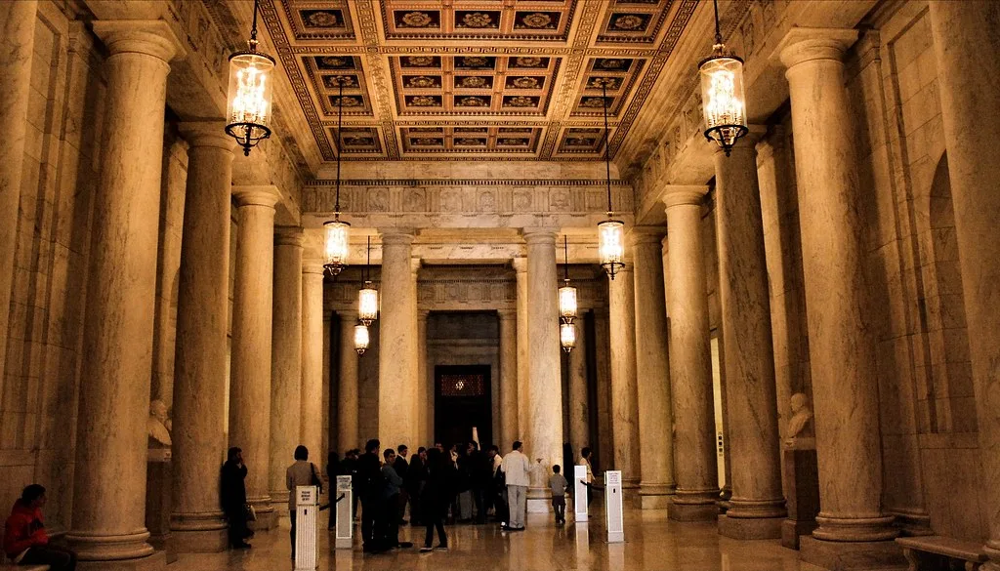
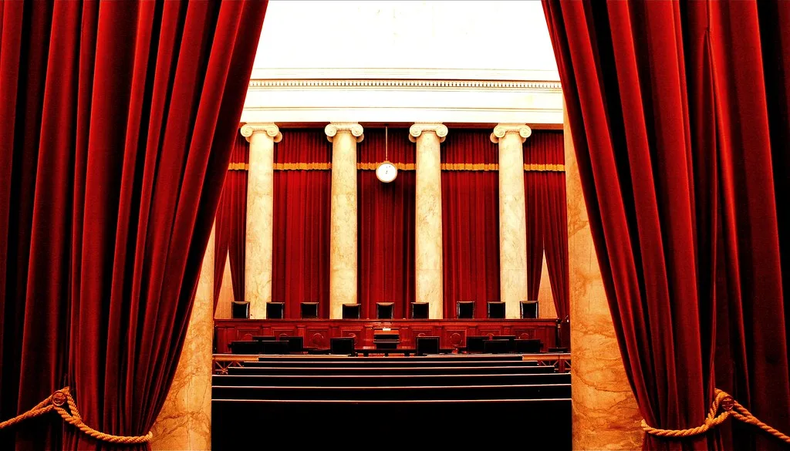

조희대 대법원장, 청와대 대법관 재제청 요구 끝내 거부…갈등 격화
조희대 대법원장이 22일 청와대의 대법관 후보자 재제청 요구를 받아들이지 않겠다는 입장을 공식적으로 밝히면서, 반년 넘게 이어져 온 대법관 인선을 둘러싼 사법부와 청와대 간 갈등이 정면충돌 양상으로 치닫고 있다. 조 대법원장은 청와대가 보내온 재제청 요청 공문에 구체적인 사유와 이를 뒷받침할 헌법적 근거가 제시되지 않았다며, 이런 상태로는 요청을 받아들이기 어렵다고 거부 의사를 명확히 했다. 조 대법원장이 이 문제에 대해 침묵을 지켜온 지 3주 만에 나온 공식 입장이라는 점에서, 그동안 수면 아래서 이어져 온 물밑 조율이 사실상 결렬됐다는 해석도 나온다.
이번 갈등의 발단은 지난달 18일로 거슬러 올라간다. 조 대법원장은 당시 노태악 전 대법관의 후임으로 손봉기 대구지법 부장판사를 제청했는데, 청와대는 열흘 뒤인 지난달 28일 다른 후보자를 다시 제청해달라고 요구했다. 청와대는 손 부장판사에 대해서는 임명 전 실질적인 사전 협의가 충분히 이루어지지 않았다는 점 등을 재제청 요구의 배경으로 들었던 것으로 전해진다. 이재명 대통령과 조 대법원장이 앞서 별도 차담을 가졌던 다음 날 이런 재제청 충돌이 공식화됐다는 점에서, 두 사람 간 물밑 조율마저 뚜렷한 성과로 이어지지 못했다는 평가가 법조계 안팎에서 나온다.

청와대는 조 대법원장의 거부 입장이 나오자 두 차례에 걸쳐 강하게 반박하고 나섰다. 청와대는 재제청 요구의 사유를 이미 당시 브리핑을 통해 설명했다는 입장이며, 이런 사정에도 불구하고 대법원장이 공문에 사유가 적혀 있지 않다는 이유로 알 수 없다고 하는 것은 이해하기 어렵다고 밝혔다. 나아가 이번 거부가 국민에 의해 선출된 대통령의 헌법상 임명권을 사실상 무력화하는 것이라며 깊은 유감을 표했다.
현재 대법관 공석은 두 자리에서 한 자리로 줄어든 상태다. 지난 7일 퇴임한 이흥구 전 대법관의 후임으로 김성수 신임 대법관이 취임하면서 공석 하나는 채워졌지만, 노태악 전 대법관 후임 자리는 여전히 비어 있다. 이 자리의 공백 기간은 이미 200일을 넘어선 것으로 파악되며, 양측이 접점을 찾지 못하면서 공백이 더 장기화할 가능성이 커지고 있다. 대법원은 대법관 한 명의 공백이 길어질수록 전원합의체 심리를 비롯한 재판 업무 전반에 부담이 누적될 수밖에 없다는 우려를 내부적으로 밝혀온 것으로 알려졌다.

법조계에서는 이번 사안이 단순한 인선 지연을 넘어 사법부의 대법관 제청권과 대통령의 임명권이 서로 충돌하는 헌법적 쟁점으로 번질 수 있다는 우려가 나온다. 대법원장의 제청권 행사에 청와대가 재차 이의를 제기하고, 대법원장이 이를 다시 거부하는 초유의 상황이 반복되면서 향후 대법관 인선 절차 전반에 대한 제도적 정비가 필요하다는 지적도 제기된다. 일부 법조계 인사들은 이번 사안이 결국 헌법재판소의 판단으로까지 이어질 가능성을 배제할 수 없다는 관측도 내놓고 있다.
양측이 좀처럼 물러서지 않는 모습을 보이면서, 이번 갈등이 어떤 방식으로 해소될지는 당분간 불투명한 상태로 남아 있다. 정치권 일각에서는 국회 차원의 중재나 논의가 필요하다는 목소리도 나오지만, 사법부 인사에 정치권이 개입하는 데 대한 부담도 만만치 않아 뚜렷한 해법을 찾기까지는 시일이 걸릴 것으로 전망된다. 추석 연휴를 앞두고 있는 만큼, 연휴 전후로 양측이 추가적인 물밑 접촉에 나설지 여부에도 관심이 쏠린다.